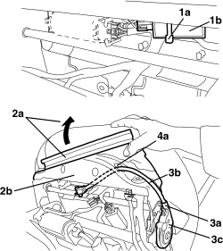

7045J28 FLEXIBLE SHAFT FROM MOTOR TO REDUCTION MECHANISM FOR FRONT SEAT ANGLE ADJUSTMENT (ONE), LEFT OR RIGHT - R.R.
- Path
- Procedures > 70 FITTINGS > 7045 FRONT SEATS > 7045J FRONT SEAT ELECTRIC MOVEMENTS > 7045J28 FLEXIBLE SHAFT FROM MOTOR TO REDUCTION MECHANISM FOR FRONT SEAT ANGLE ADJUSTMENT (ONE), LEFT OR RIGHT - R.R.
- Kind
- repair procedure (removal / refitting; the operation number is the code)
- Applies to
- all engines; all production periods; only with equipment: Electric seats
- Interactive page
- https://sloeber94.github.io/elrnDB-aBrrSpdr/en/#/946004164
Applies to: all engines; all production periods; only with equipment: Electric seats
 Removing
Removing
 Refitting
Refitting- Raise the seat until it is in the end of travel position.
Op. 7045A10 FRONT SEAT (ONE), LEFT OR RIGHT - R.R.
Op. 7045A43 FRONT SEAT EXTERIOR GUARD (ONE), LEFT OR RIGHT - R.R
Op. 7045J33 FRONT SEAT SWINGING MOTOR, (ONE) LH OR RH - R R AFTER CHECKING THE ELECTRIC CIRCUIT
1. Cut the band (1a) securing the seat heating control unit (1b).
2. Release the front end (2a) of the cushion cover from the seat structure (2b).
3. Disconnect the end (3a) of the flexible shaft (3b) from the reduction mechanism (3c) (press fit).
4. Remove the flexible shaft (3b) releasing it through the opening (4a) in the seat structure.

Applies to: all engines; all production periods; only with equipment: Electric seats
Refitting
Removing- Check that the flexible shaft for the seat rocker motor is not damaged.
- Place the flexible shaft in position and attach it in the seat structure opening.
- Connect the end of the flexible shaft to the reduction mechanism (press fit).
- Attach the front end of the cushion cover to the seat structure.
- Fit the seat heating control unit retaining band.
Op. 7045J33 FRONT SEAT SWINGING MOTOR, (ONE) LH OR RH - R R AFTER CHECKING THE ELECTRIC CIRCUIT
Op. 7045A43 FRONT SEAT EXTERIOR GUARD (ONE), LEFT OR RIGHT - R.R
Op. 7045A10 FRONT SEAT (ONE), LEFT OR RIGHT - R.R.
- Check that the seat reclines correctly.
Topics linked from this page (3)
- 7045A10 FRONT SEAT (ONE), LEFT OR RIGHT - R.R.
- 7045A43 FRONT SEAT EXTERIOR GUARD (ONE), LEFT OR RIGHT - R.R
- 7045J33 FRONT SEAT SWINGING MOTOR, (ONE) LH OR RH - R R AFTER CHECKING THE ELECTRIC CIRCUIT